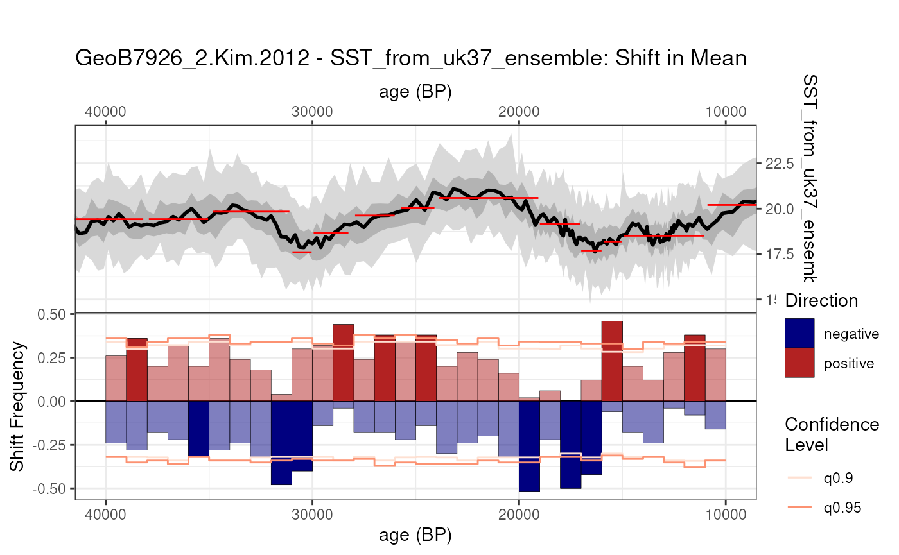
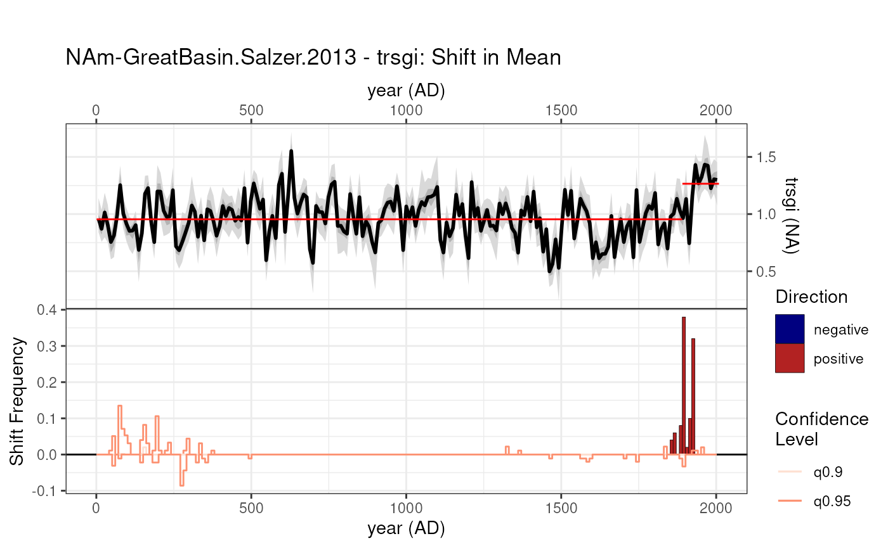
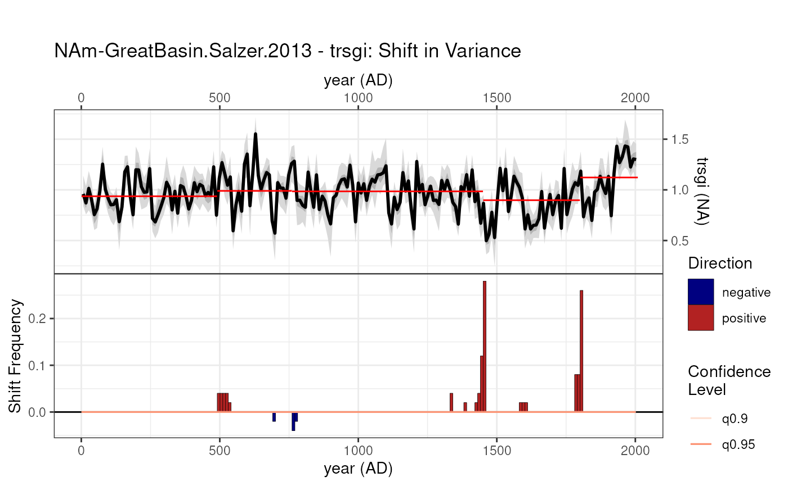

detectShift.Rmd
library(actR)This vignette shows how actR detects shift (and their statistical significance) for 2 of our example datasets: the geob7926_2 sedimentary record of Kim et al 2012 covering the last deglaciation (roughly 28 to 9ka BP) and the Great Basin tree-ring record of Salzer et al 2013 covering the Common Era at annual resolution.
The following code does these things: * loads the data from the provided LiPD file “geob7926_2” (available as a tibble for easier load-in). * extracts the pre-existing age ensemble (generated using Bacon within GeoChronR) and the akenone-reconstructed SST. * tests significance against 50 surrogate timeseries [need to clarify difference between n.ens and null.hypothesis.n]. * specifies a minimum segment length of 3000y
msGeob <- detectShift(geob7926_2,
time.variable.name = "ageEnsemble",
vals.variable.name = "SST_from_uk37_ensemble",
method = "PELT",
null.hypothesis.n = 50,
summary.bin.step = 500,
minimum.segment.length = 8000,
n.ens = 50)
#> Selected SST_from_uk37_ensemble
#> timeUnits is at least partially absent in the input data
#> Testing null hypothesis with 50 simulations, each with 50 ensemble members.
#>
#> Testing null hypothesis ■■ 4% | ETA: 25s
#> Testing null hypothesis ■■■■■ 14% | ETA: 22s
#> Testing null hypothesis ■■■■■■■■■ 26% | ETA: 19s
#> Testing null hypothesis ■■■■■■■■■■■■ 38% | ETA: 16s
#> Testing null hypothesis ■■■■■■■■■■■■■■■■ 50% | ETA: 13s
#> Testing null hypothesis ■■■■■■■■■■■■■■■■■■■■ 62% | ETA: 10s
#> Testing null hypothesis ■■■■■■■■■■■■■■■■■■■■■■■ 72% | ETA: 7s
#> Testing null hypothesis ■■■■■■■■■■■■■■■■■■■■■■■■■■ 84% | ETA: 4s
#> Testing null hypothesis ■■■■■■■■■■■■■■■■■■■■■■■■■■■■■■ 96% | ETA: 1sThis lines generates a textual summary of the output:
summary(msGeob)
#> GeoB7926_2.Kim.2012 - SST_from_uk37_ensemble: Shift in Mean results
#> Searched for Shift in Mean with a minimum segment length of 8000 years, summarizing the results over windows of 500 years.
#>
#> Overall result: Detected 3 Shift in Mean event(s) that were significant at the alpha < 0.05 level
#> # A tibble: 3 × 3
#> time_start time_end empirical_pvalue
#> <dbl> <dbl> <dbl>
#> 1 9227. 9727. 0
#> 2 26227. 26727. 0
#> 3 18227. 18727. 0
#> Time uncertainty considered? TRUE Time ensemble supplied (n = 100)
#> Paleo uncertainty considered? TRUE Values ensemble supplied (n = 2500)
#> Error propagation ensemble members = 50
#> Null hypothesis testing ensemble members = 50
#> Members simulated using isospectral method
#>
#> Parameter choices:
#> cpt.fun = changepoint::cpt.mean
#> minimum.segment.length = 8000
#> method = PELT
#> penalty = MBIC
#> ncpts.max = Inf
#> and this command plots it:
geoBplot <- plot(msGeob)
Note that, as usual with actR, the plot is a ggplot2 object, which is infinitely customizable (e.g. for a talk, a poster, a paper, etc).
Now we repeat the same steps over the Great Basin tree-ring record of Salzer et al 2013. We first attempt to detect changes in the mean.
msGb <- detectShift(great_basin,
time.variable.name = "year",
vals.variable.name = "trsgi",
null.hypothesis.n = 50,
summary.bin.step = 1,
minimum.segment.length = 50,
simulate.time.uncertainty = FALSE,
method = "AMOC",
cpt.fun = changepoint::cpt.mean,
paleo.uncertainty = 0.1,
n.ens = 50)
#> Selected trsgi
#> Testing null hypothesis with 50 simulations, each with 50 ensemble members.
#>
#> Testing null hypothesis ■■■■■ 14% | ETA: 11s
#> Testing null hypothesis ■■■■■■■■■■■■ 38% | ETA: 8s
#> Testing null hypothesis ■■■■■■■■■■■■■■■■■■■■ 62% | ETA: 5s
#> Testing null hypothesis ■■■■■■■■■■■■■■■■■■■■■■■■■■ 84% | ETA: 2s
gbmPlot <- plot(msGb)
As you can see, the method does not detect any on this dataset.
However, one might also want to detect shifts in variance. To do so, all
you have to do is specify cpt.fun = changepoint::cpt.var
(leveraging the changepoint
package).
vsGb <- detectShift(great_basin,
time.variable.name = "year",
vals.variable.name = "trsgi",
null.hypothesis.n = 50,
summary.bin.step = 10,
minimum.segment.length = 200,
simulate.time.uncertainty = FALSE,
paleo.uncertainty = 0.1,
method = "PELT",
cpt.fun = changepoint::cpt.var,
surrogate.method = "shuffle",
n.ens = 50)
#> Selected trsgi
#> Testing null hypothesis with 50 simulations, each with 50 ensemble members.
#>
#> Testing null hypothesis ■■■ 8% | ETA: 12s
#> Testing null hypothesis ■■■■■■■■■■ 30% | ETA: 9s
#> Testing null hypothesis ■■■■■■■■■■■■■■■■■ 54% | ETA: 6s
#> Testing null hypothesis ■■■■■■■■■■■■■■■■■■■■■■■■ 76% | ETA: 3sNote also that actR offers 3 different methods to generate
surrogates, as detailed in the documentation. The default is
isospectral, which was used in the previous examples. To change
that to the rEDM “shuffle” method, just specify
surrogate.method = "shuffle".
gbvPlot <- plot(vsGb)
Now a change in variance is detected at the very end of the record. To check its robustness, we should probably inquire more about the sample depth of the dataset (number of tree cores used to make the composite in each year), as well as the technique used for removing the biological component of the signal. This is a reminder that no technique, however nifty, is a substitute for knowing your data!